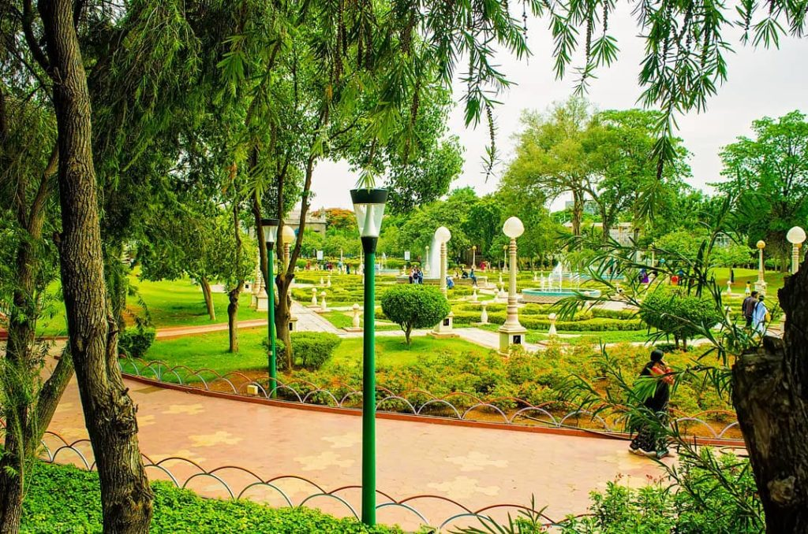

◉ Location : Hussain Sagar , Hyderabad, India .
◉ Nearest Railway Station : Secundarabad Railway Station , Hyderabad, India .
◉ Distance from nearest Railway Station :
◉ By Metro :- Nearest to Hussain Sagar is Paradise Metro Station which is at a distance of 1 km.
◉By Bus :- There is Liberty Bus Stand near Hussain Sagar Lake which is 7 minutes walk away.
◉By Train :- Near Hussain Sagar Lake is Khairatabad station which is 30 mins walk away.
◉ Weather Conditions : 21°C Moderately .
◉ Best time to visit : Between June and February .
◉ Opening Timings : 8:00 AM .
◉ Closing Timings : 10:00 PM .
◉ Travel Agency : WELCOME NISAR CARS
◉ Travel Agent : Nithesh Kumar
◉ Phone : 09347975119
◉ Hours : Opens 24 hours
◉ Pick-up : Mon-Sat (10am-10pm) & Sun (10am-6pm)
◉ Delivery : Opens 24 hours

◉ Location : NTR Gardens , Hyderabad, India .
◉ Nearest Railway Station : Secundarabad Railway Station , Hyderabad, India .
◉ Distance from nearest Railway Station :
◉ By Metro :- The nearest metro station to NTR Garden is Khairatabad.It is an 18-minute walk.
◉By Rail:- The nearest railway station to the Garden is Necklace Road. It is a 6-minute walk away.
◉ Weather Conditions : 21°C Moderately .
◉ Best time to visit :October to February .
◉ Opening Timings : 9:00 AM .
◉ Closing Timings : 10:00 PM .
◉ Travel Agency : KINGHILLS TRAVELS
◉ Travel Agent : Manoj Varma
◉ Phone : 09929542727
◉ Timings : 11am-7pm
◉ Services : Adventure tours, Group tours, Customized tours.